ФУНДАМЕНТ — как выглядит СИНГУЛЯР v3.0
Пятнадцать страниц визуального канона из дизайн-пакета дома: стекло, серебро, золото. Этот облик живёт на всём сайте с такта v1.28.0 строго по документации (разбор 15/15 макетов): токены v3.1 — золото #D4AF37 единым акцентом, серебро текстов, стеклянные панели с тонкой светлой рамкой, кинетический холст из стеклянных плоскостей с тёплым свечением. Страницы ниже — источник, из которого облик собран.
Сущность не меняется. АЛМА, АПФЕЛЬ, ЭППЛ, ЯБЛОКО — 7170 языков — это аватары, бирки, ярлыки. СИНГУЛЯР остаётся мозгом дома: обновляется облик, не трогается суть.
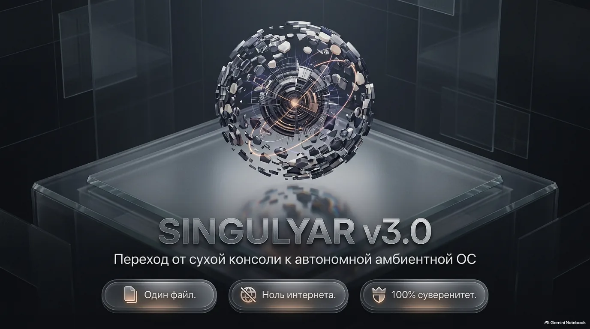
Переход от сухой консоли к автономной амбиентной ОС. Один файл. Ноль интернета. 100% суверенитет.
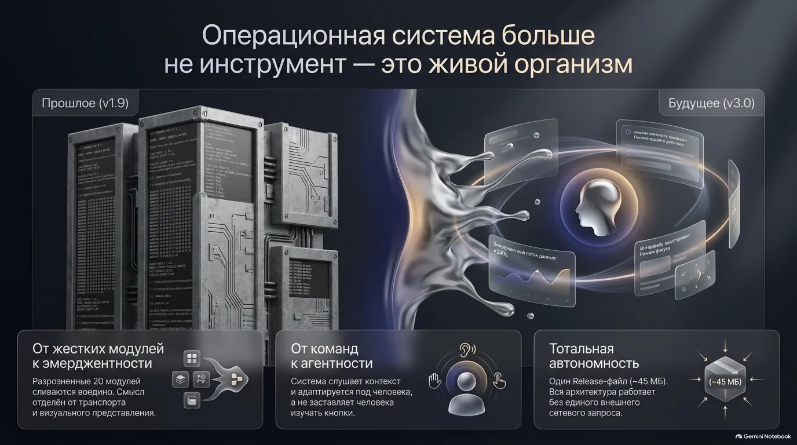
Операционная система больше не инструмент — это живой организм: от жёстких модулей к эмерджентности, от команд к агентности, тотальная автономность — один Release-файл (~45 МБ) без единого внешнего сетевого запроса.
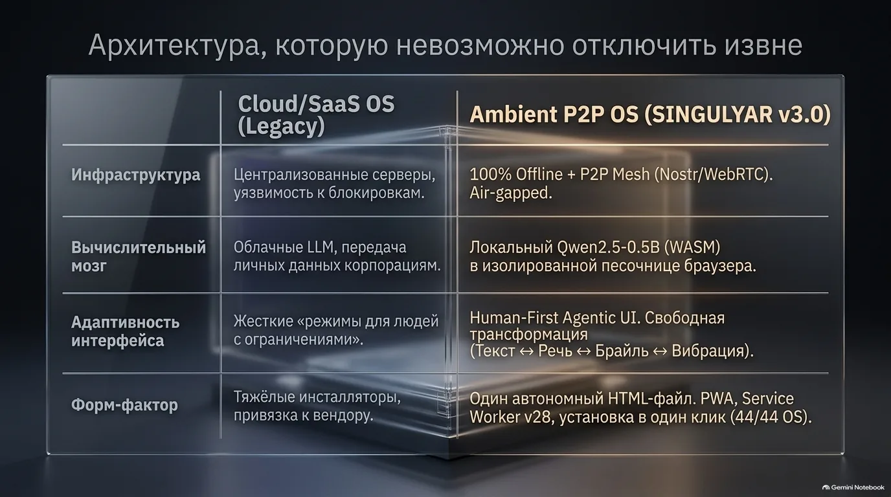
Против Legacy Cloud/SaaS: 100% Offline + P2P Mesh (Nostr/WebRTC), локальный Qwen2.5-0.5B (WASM) в изолированной песочнице браузера, Human-First Agentic UI (Текст ↔ Речь ↔ Брайль ↔ Вибрация), один автономный HTML-файл — PWA без вендорной клетки.
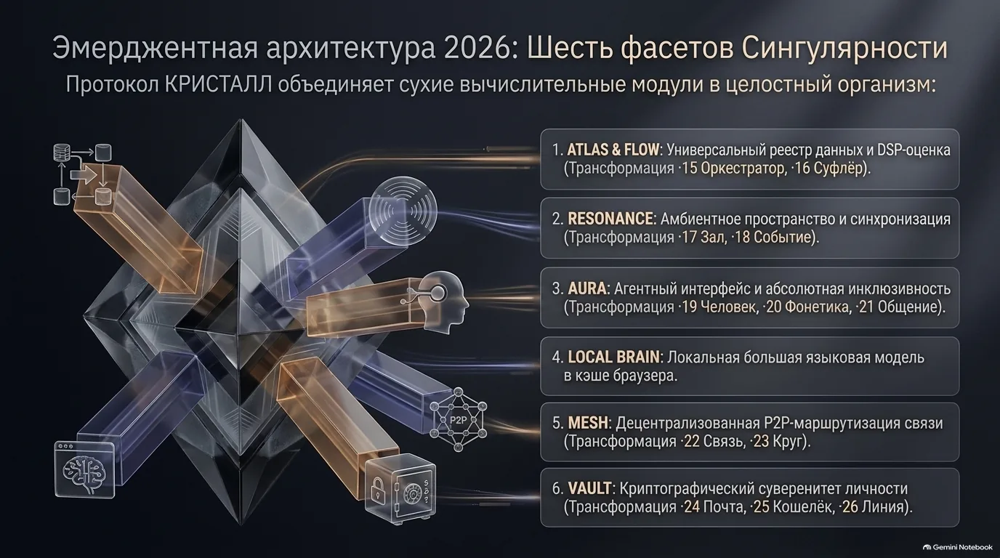
Эмерджентная архитектура 2026: протокол КРИСТАЛЛ объединяет сухие вычислительные модули в целостный организм — ATLAS & FLOW (·15, ·16), RESONANCE (·17, ·18), AURA (·19, ·20, ·21), LOCAL BRAIN, MESH (·22, ·23), VAULT (·24, ·25, ·26).
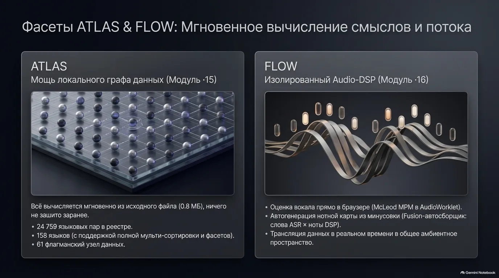
ATLAS — мощь локального графа данных (·15): 24 759 языковых пар, 158 языков, 61 флагманский узел, всё вычисляется из исходного файла. FLOW — изолированный Audio-DSP (·16): оценка вокала McLeod MPM в AudioWorklet, автогенерация нотной карты (слова ASR × ноты DSP), трансляция в реальном времени.
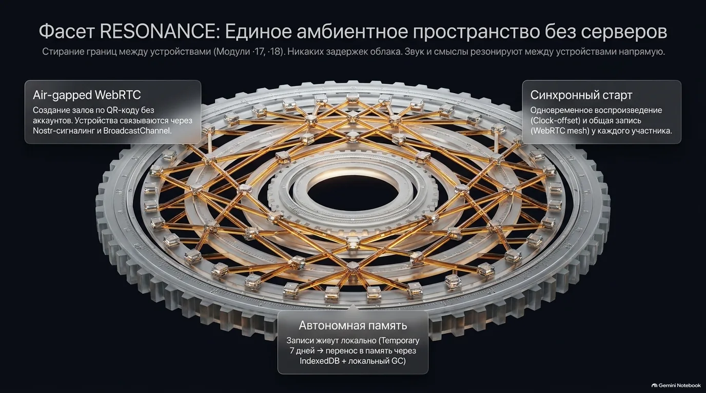
Единое амбиентное пространство без серверов (·17, ·18): залы по QR-коду без аккаунтов (Nostr-сигналинг + BroadcastChannel), синхронный старт по clock-offset с общей записью у каждого, автономная память — Temporary 7 дней → IndexedDB + локальный GC.
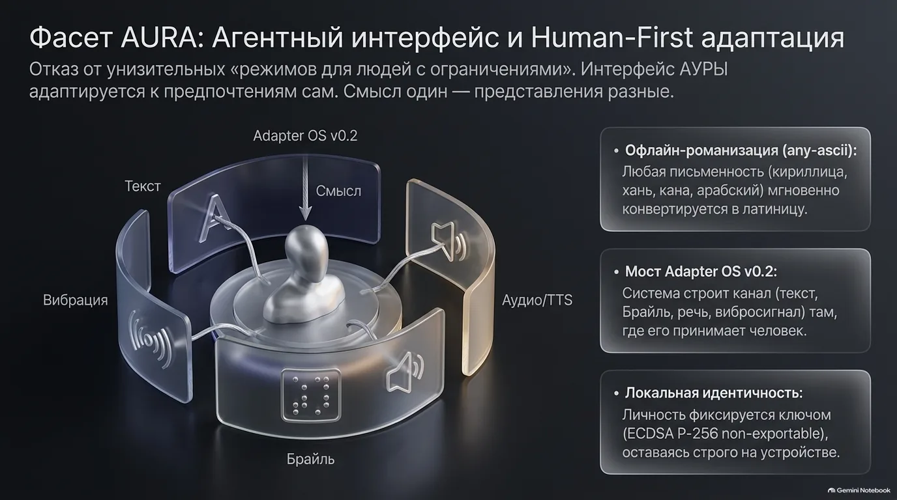
Агентный интерфейс и Human-First адаптация (·19, ·20, ·21): никаких унизительных «режимов для людей с ограничениями» — Adapter OS v0.2 строит канал (текст, Брайль, речь, вибросигнал) там, где его принимает человек; офлайн-романизация any-ascii; локальная идентичность ECDSA P-256 non-exportable.
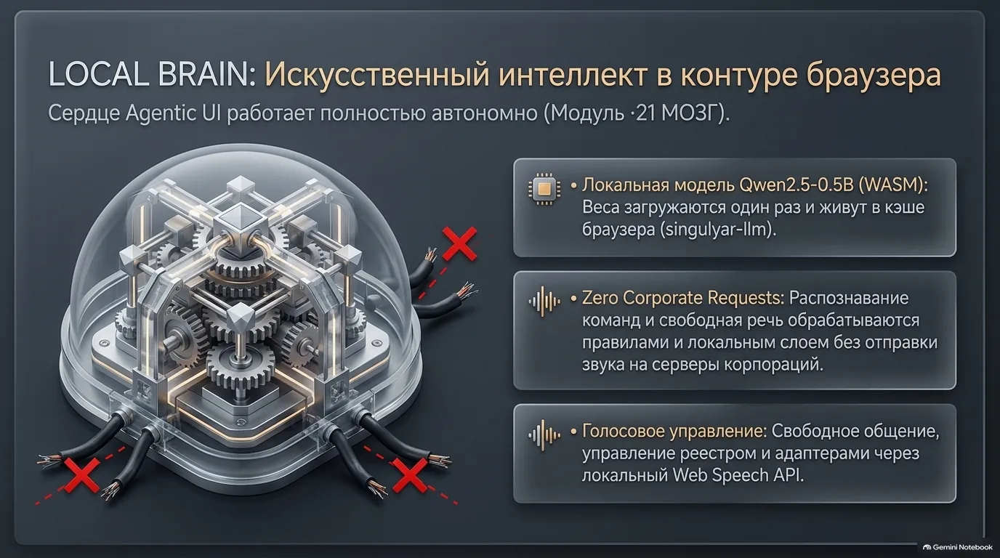
Искусственный интеллект в контуре браузера (·21): локальная модель Qwen2.5-0.5B (WASM) живёт в кэше браузера (singulyar-llm); Zero Corporate Requests — команды и свободная речь без отправки звука на серверы корпораций; голосовое управление локальным Web Speech API.
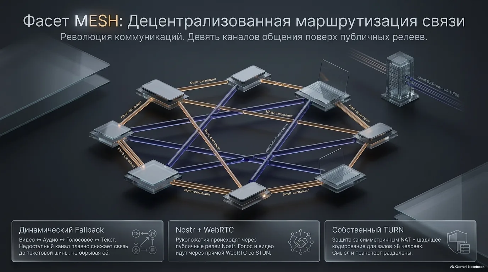
Децентрализованная маршрутизация связи (·22, ·23): девять каналов поверх публичных релеев; динамический fallback плавно снижает связь до текстовой шины, не обрывая её; рукопожатие — Nostr, голос и видео — прямой WebRTC со STUN; собственный TURN (coturn) за симметричный NAT и для залов >8.
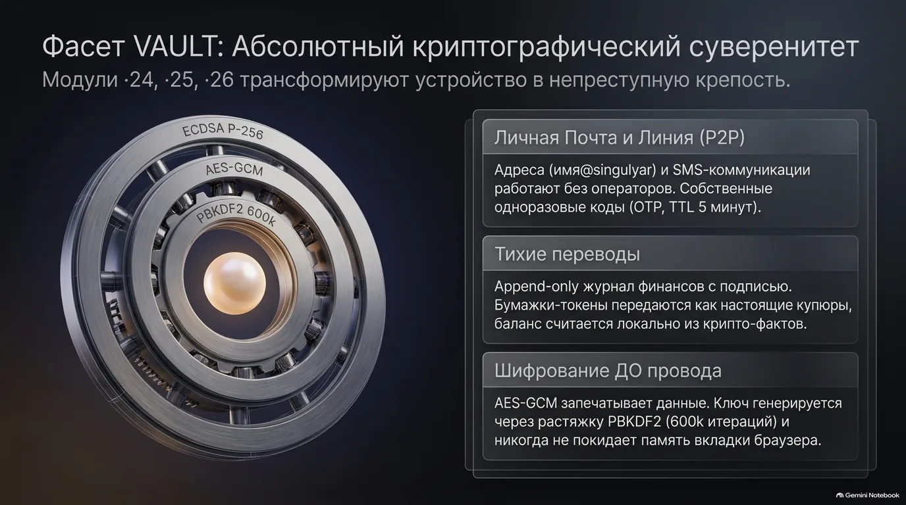
Абсолютный криптографический суверенитет (·24, ·25, ·26): личная почта и линия P2P (имя@singulyar, OTP с TTL 5 минут); тихие переводы — append-only журнал с подписью, бумажки-токены; шифрование ДО провода — AES-GCM с растяжкой PBKDF2 600k, ключ никогда не покидает память вкладки.
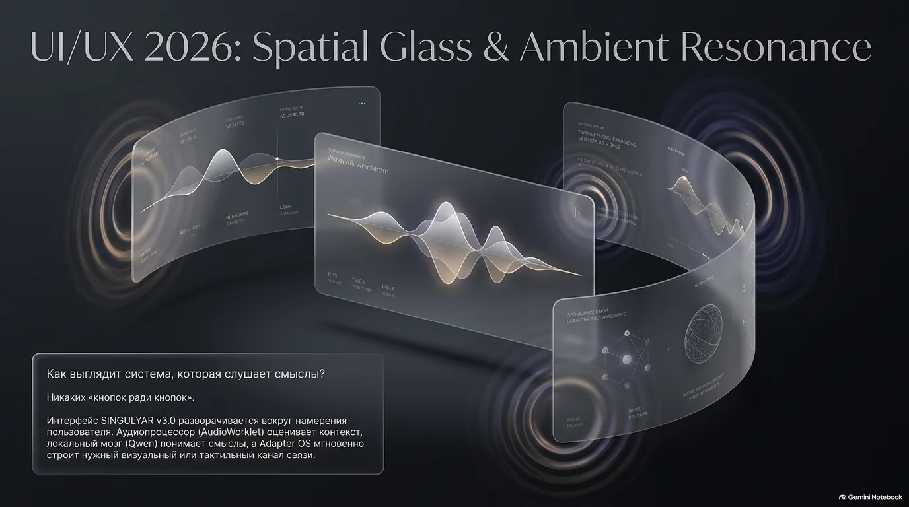
Никаких «кнопок ради кнопок»: интерфейс разворачивается вокруг намерения человека. Аудиопроцессор (AudioWorklet) оценивает контекст, локальный мозг (Qwen) понимает смыслы, Adapter OS мгновенно строит нужный визуальный или тактильный канал связи.
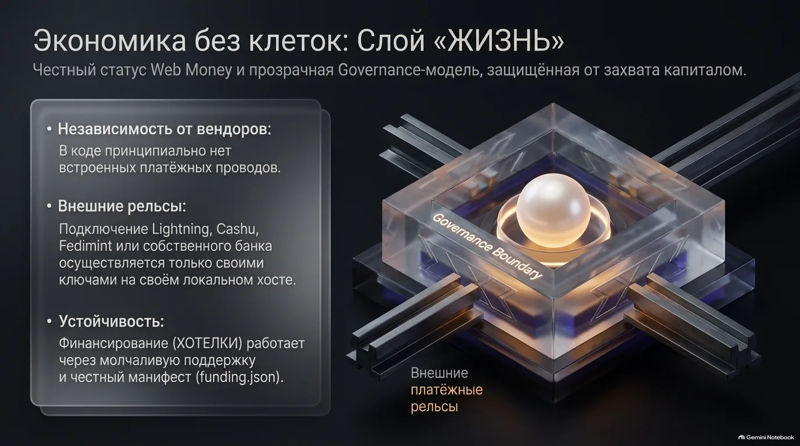
Честный статус Web Money и прозрачная Governance-модель: в коде принципиально нет встроенных платёжных проводов; внешние рельсы (Lightning, Cashu, Fedimint, свой банк) — только своими ключами на своём хосте; финансирование через ХОТЕЛКИ и честный манифест funding.json за Governance Boundary.
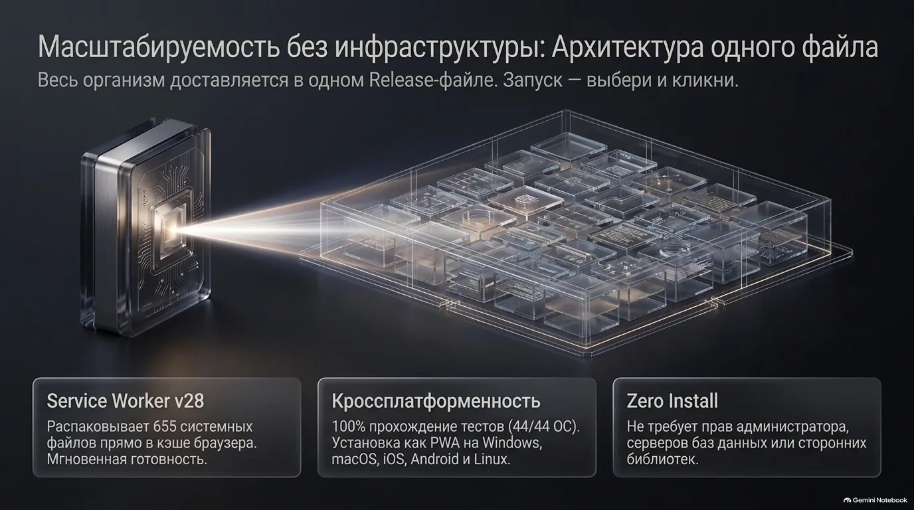
Масштабируемость без инфраструктуры: весь организм доставляется одним Release-файлом, запуск — «выбери и кликни»; установка PWA на Windows, macOS, iOS, Android и Linux; Zero Install — без прав администратора, серверов баз данных и сторонних библиотек.
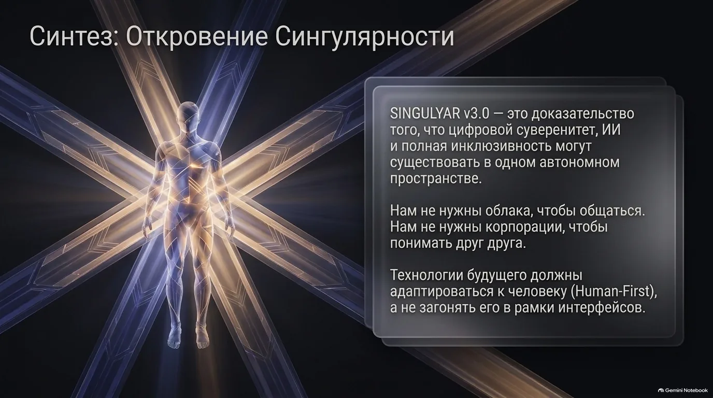
SINGULYAR v3.0 — доказательство, что цифровой суверенитет, ИИ и полная инклюзивность могут существовать в одном автономном пространстве. Нам не нужны облака, чтобы общаться. Нам не нужны корпорации, чтобы понимать друг друга. Технологии будущего адаптируются к человеку (Human-First).
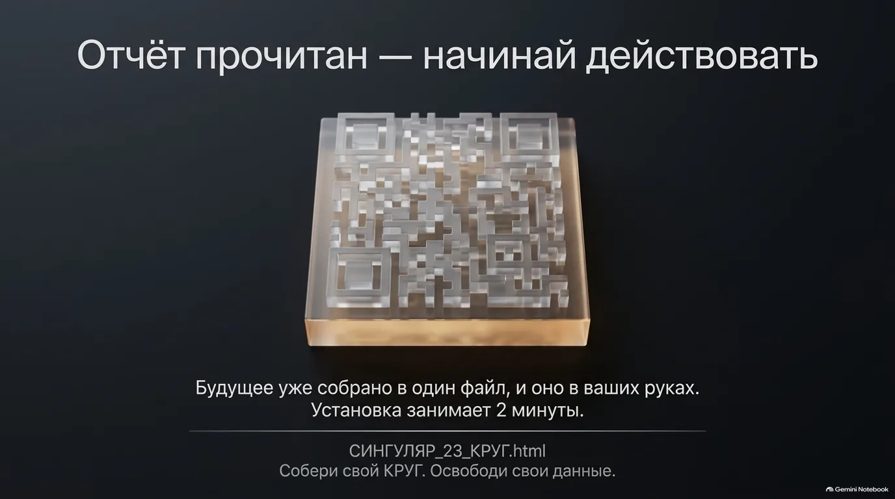
Отчёт прочитан — начинай действовать. Будущее уже собрано в один файл, и оно в твоих руках: установка занимает 2 минуты — открыть установку. Собери свой КРУГ ·23 — освободи свои данные.